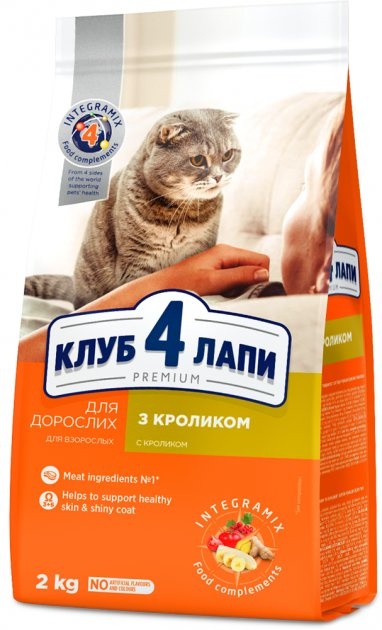
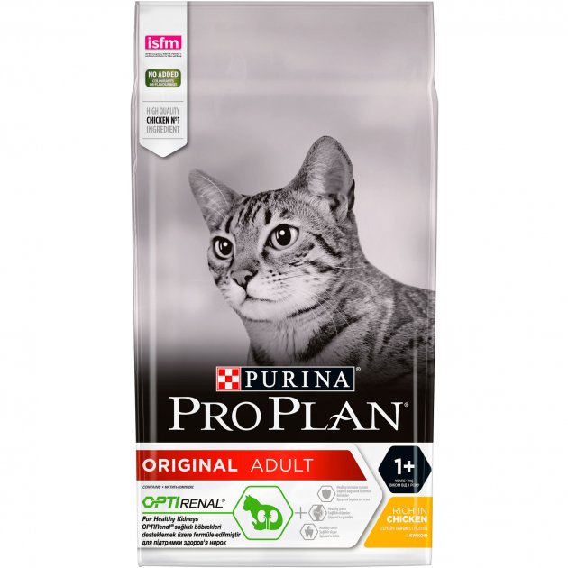
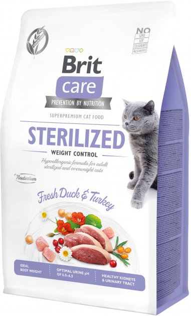
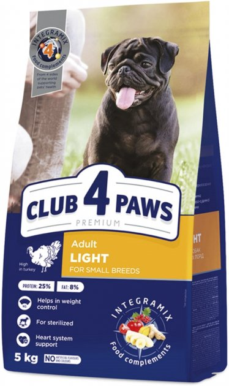
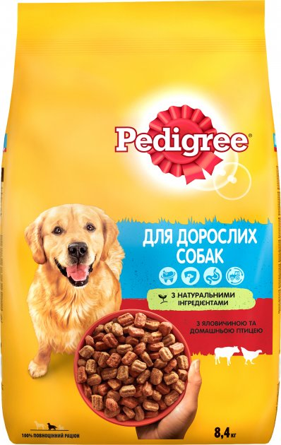
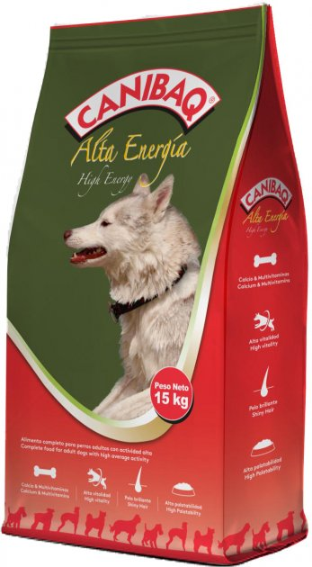
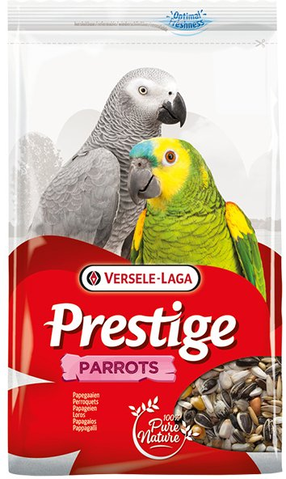
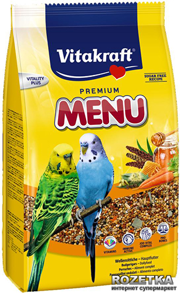
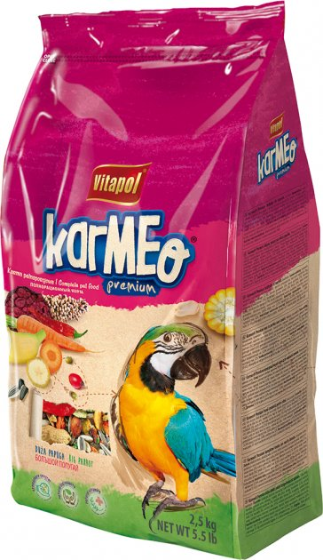

Категорії товарів
Список товарів

Club 4 Paws
- price: 284 грн,
- type: Сухий корм,
- weight: 2 кг,
- appointment: Для кішок з проблемами шкіри та шерсті,
- class: Преміум,
- age: Від 12 міс.

Purina Pro Plan
- price: 564 грн,
- type: Сухий корм,
- weight: 1.5 кг,
- appointment: Для кішок з проблемами шкіри та шерсті,
- class: Суперпреміум,
- age: Від 12 міс.

Brit Care Cat
- price: 221 грн,
- type: Сухий корм,
- weight: 400 г,
- appointment: Для стерилізованих кішок,
- class: Суперпреміум,
- age: 12 міс. - 7 років

Club 4 Paws
- price: 607 грн,
- type: Сухий корм,
- weight: 5 кг,
- appointment: Для стерилізованих собак,
- class: Преміум,
- age: Для дорослих собак на всіх стадіях життя.

Pedigree
- price: 564 грн,
- type: Сухий корм,
- weight: 8.4 кг,
- breed: Середні,
- class: Преміум,
- age: Від 1 року.

Canibaq
- price: 999 грн,
- type: Сухий корм,
- weight: 15 кг,
- appointment: Для активних собак,
- class: Економ,
- age: Для дорослих собак на всіх стадіях життя.

Versele-Laga Prestige
- price: 243 грн,
- compound: Біле насіння соняшника 27%, смугасте насіння соняшника 27%, пшениця 6%, кукурудза 6%, гострий овес 5%, сафлор 5%, серцевина арахісу 5%, очищений арахіс 4%, сорго 3%, гречана крупа 3%, конопляне насіння 3%, попкорн 2%, неочищений рис 2%, кедрові горіхи 2%.,
- weight: 1 кг,
- appointment: Великі папуги,
- class: Звичайний,
- kind of parrot: Амазон, Ара, Жако, Какаду.

Vitakraft Menu Vital
- price: 135 грн,
- series: Повсякденний,
- weight: 500 г,
- appointment: Дрібні папуги,
- class: Звичайний,
- kind of parrot: Хвилястий.

Vitapol Karmeo
- price: 798 грн,
- compound: Біле насіння соняшника, насіння соняшника смугастого, боби, сорго червоне, кукурудзяне борошно, сорго біле, гарбузове насіння, сушена морква, сушений буряк, очищений арахіс, квасолеві пластівці, кукурудзяні пластівці, сушені плоди троянди, сушені плоди глоду, горохові пластівці, банан сушений, пшеничне борошно, насіння шафрану, насіння конопель, арахіс, сушений перець чилі,
- weight: 2.5 кг,
- appointment: Великі папуги,
- class: Звичайний,
- kind of parrot: Ара, Жако, Какаду.
Опис обраного товару